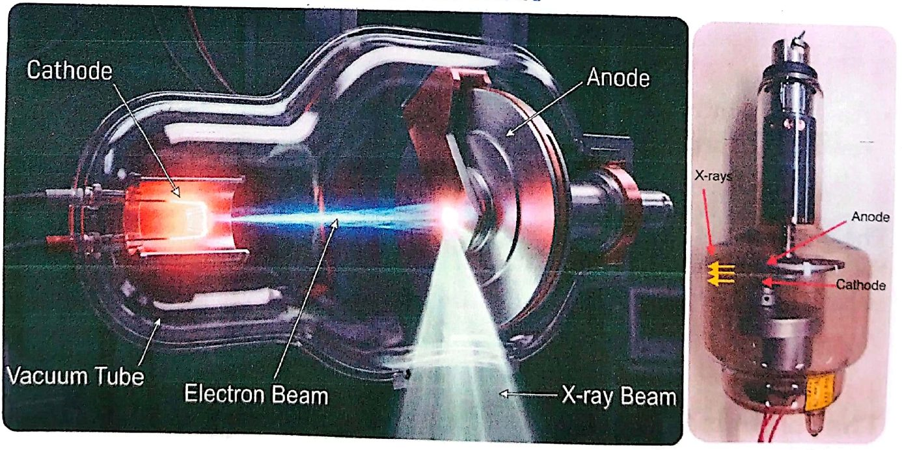
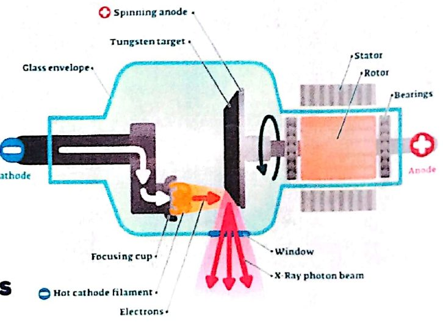
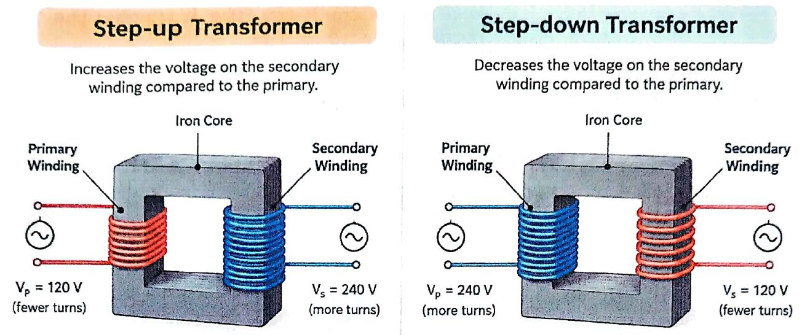
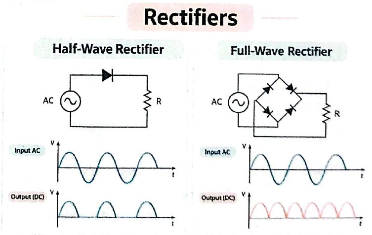
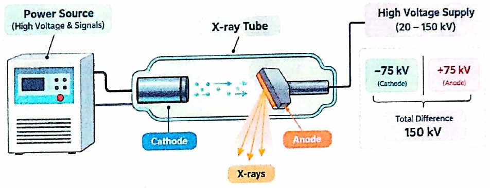
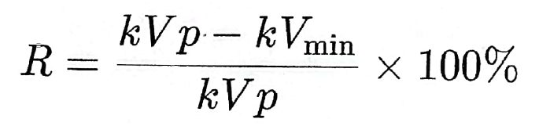
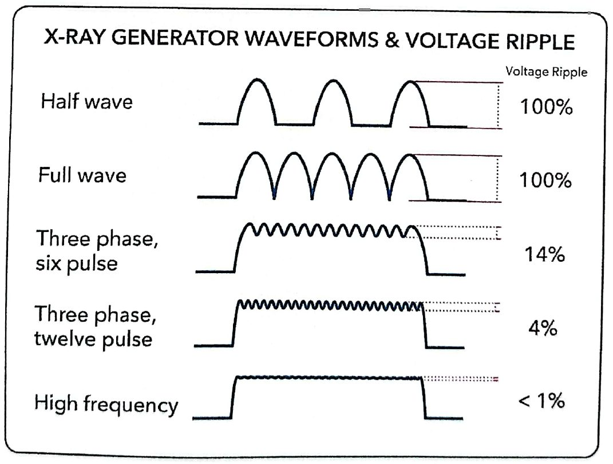

أنبوب الأشعة والمحوّلة والمقوّم والمولّدX-ray Tube, Transformer, Rectifiers & X-ray Generator — Second Experiment in Practice
عملي · م02 · 4.4 دقيقةأقسام المحاضرة (8)
- مقدمة: أنبوب الأشعة السينيةIntroduction: The X-ray Tube
- الكاثود: الفتيلة وكأس التركيز1- Cathode: Filament & Focusing Cup
- الأنود والهدف2- Anode & Target
- المحوّلةTransformer
- المقوّماتRectifiers
- مولّد الأشعة السينية2- The X-ray Generator
- أنواع مولّدات الأشعة السينيةTypes of X-ray Generators
- تموّج الجهدVoltage Ripple
مقدمة: أنبوب الأشعة السينيةIntroduction: The X-ray Tube
Introduction: An x-ray tube consists of two electrodes sealed into an glass envelope. 1-The cathode 2-The anode
مقدمة: يتكوّن أنبوب الأشعة السينية من قطبين كهربائيين محكَمَي الإغلاق داخل غلاف زجاجي: 1- الكاثود 2- الأنود.

الكاثود: الفتيلة وكأس التركيز1- Cathode: Filament & Focusing Cup
The cathode is the negative side of the x-ray tube because it is a source of electrons and has two primary parts :
الكاثود هو الجانب السالب من أنبوب الأشعة لأنه مصدر الإلكترونات، وله جزءان رئيسيان:
أ- الفتيلةA- The filament
- • Structure: A wire coil, approximately 2 mm in diameter and 1 to 2 cm in length.التركيب: ملف سلكي قطره نحو 2 مم وطوله 1 إلى 2 سم.
- • Function: Emits electrons when heated to high temperatures (around 2200°C).الوظيفة: تبعث الإلكترونات عند تسخينها إلى درجات حرارة عالية (نحو 2200 درجة مئوية).
- • Power Requirements: Operates efficiently with a current of 4-10A and a voltage of 10V.متطلبات القدرة: تعمل بكفاءة بتيار 4–10 أمبير وجهد 10 فولت.
- • Mechanism (Thermionic Emission): The intense current provides enough energy to "boil off" and eject outer shell electrons from the filament's atoms.الآلية (الانبعاث الحراري للإلكترونات): التيار الشديد يعطي طاقة كافية «لغلي» إلكترونات الغلاف الخارجي وقذفها من ذرات الفتيلة.
ب- كأس التركيزB-The Focusing cup
Function: Controls the width and spread of the electron beam and directly toward the target (anode).
الوظيفة: يتحكّم بعرض حزمة الإلكترونات وانتشارها ويوجّهها نحو الهدف (الأنود).
الأنود والهدف2- Anode & Target
The anode is the positive side of the x-ray tube, which divided into two types: A- Stationary , B- Rotating
الأنود هو الجانب الموجب من أنبوب الأشعة، وينقسم إلى نوعين: أ- الثابت، ب- الدوّار.

المحوّلةTransformer
- • Transformer Uses electromagnetic induction to vary voltageالمحوّلة تستعمل الحث الكهرومغناطيسي لتغيير الجهد.
- • Consists of an iron core , a primary winding , and secondary winding .تتكوّن من قلب حديدي وملف ابتدائي وملف ثانوي.
- • Step-up Transformer: Increases the voltage on the secondary winding compared to the primary.المحوّل الرافع: يرفع الجهد على الملف الثانوي مقارنةً بالابتدائي.
- • Step-down Transformer: Decreases the voltage on the secondary winding compared to the primary.المحوّل الخافض: يخفض الجهد على الملف الثانوي مقارنةً بالابتدائي.

المقوّماتRectifiers
- • A rectifier converts Alternating Current (AC) into Direct Current (DC) using one or more P-N junction diodes.المقوّم يحوّل التيار المتناوب (AC) إلى تيار مستمر (DC) باستعمال صمّام ثنائي (دايود) واحد أو أكثر من نوع P-N.
- • A diode acts as a one-way valve, allowing current to flow in one direction while blocking the opposite direction.الصمّام الثنائي يعمل كصمّام باتجاه واحد: يسمح بمرور التيار في اتجاه ويمنعه في الاتجاه المعاكس.
- 1. Half-wave rectifier: Converts only one half of the AC cycle into DC, resulting in lower efficiencyمقوّم نصف الموجة: يحوّل نصف دورة التيار المتناوب فقط إلى تيار مستمر، فتكون الكفاءة أقل.
- 2. Full-wave rectifier: Converts both the positive and negative halves of the AC cycle into DC,resulting in higher efficiencyمقوّم الموجة الكاملة: يحوّل النصفين الموجب والسالب من دورة التيار المتناوب إلى تيار مستمر، فتكون الكفاءة أعلى.

مولّد الأشعة السينية2- The X-ray Generator
The X-ray generator is the power source of the X-ray tube. It supplies the electrical power and signals required for tube operation.
مولّد الأشعة السينية هو مصدر القدرة لأنبوب الأشعة؛ يزوّده بالقدرة الكهربائية والإشارات اللازمة لتشغيله.
الوظائف الرئيسيةMain Functions :
- 1. It supplies current at a high voltage to the x-ray tube (20 to 150 kV) needed for x ray production.يزوّد أنبوب الأشعة بتيار بجهد عالٍ (20 إلى 150 كيلوفولت) لازم لإنتاج الأشعة السينية.
- 2. The tube voltage is supplied Symmetrically to the tube, i.e. a net potential difference of is achieved by feeding -75 kV to the cathode and +75 kV to the anodeجهد الأنبوب يُجهَّز بشكل متناظر، أي يتحقّق فرق الجهد الكلي بتغذية الكاثود بـ −75 كيلوفولت والأنود بـ +75 كيلوفولت.

أنواع مولّدات الأشعة السينيةTypes of X-ray Generators
أ- المولّدات أحادية الطورA-Single-Phase Generators :
- • Full-wave rectification produces two pulses per AC cycle.تقويم الموجة الكاملة ينتج نبضتين لكل دورة تيار متناوب.
- • At 60 Hz: 120 pulses per second.عند 60 هرتز: 120 نبضة في الثانية.
- • Voltage ripple: 100%.تموّج الجهد: 100%.
- • Voltage drops to zero between pulses.الجهد ينزل إلى الصفر بين النبضات.
- • Produces lower energy soft x-rays , longer exposure time, greater patient doseتنتج أشعة ليّنة أقل طاقة، وزمن تعرّض أطول، وجرعة أكبر للمريض.
ب- المولّدات ثلاثية الطورB-Three-Phase Generators
- • Combines multiple voltage waveforms.تجمع عدة أشكال موجية للجهد.
- • Voltage ripple: approximately 5-15%, depending on design.تموّج الجهد: نحو 5–15% حسب التصميم.
- • Voltage does not drop to zero during exposure.الجهد لا ينزل إلى الصفر أثناء التعرّض.
- • Higher effective X-ray energy and improved output compared with single-phase systems.طاقة فعّالة أعلى للأشعة وناتج أفضل مقارنةً بالأنظمة أحادية الطور.
- • Generally allows shorter exposure times.تسمح عموماً بأزمنة تعرّض أقصر.
ج- المولّد عالي الترددC- High frequency generator:
- • using a high- frequency electric circuitيستعمل دائرة كهربائية عالية التردد.
- • standard frequency increase from 60 Hz to 500 KHzالتردد القياسي يرتفع من 60 هرتز إلى 500 كيلوهرتز.
- • Voltage ripple: less than 1% in modern designs. Nearly constant potential.تموّج الجهد: أقل من 1% في التصاميم الحديثة؛ جهد شبه ثابت.
- • more efficient than 3-phase generatorsأكفأ من المولّدات ثلاثية الطور.
- • Short exposure times and Can reduce patient dose.أزمنة تعرّض قصيرة، ويمكن أن يقلّل جرعة المريض.
- • reduced low-energy radiation and Increase x-ray tube life.يقلّل الإشعاع منخفض الطاقة ويطيل عمر أنبوب الأشعة.
تموّج الجهدVoltage Ripple
refers to the fluctuation in voltage output of some X-ray generators. aslo is defined as the difference between the peak voltage and the minimum voltage, divided by the peak voltage and multiplied by 100
تموّج الجهد يشير إلى التذبذب في الجهد الخارج من بعض مولّدات الأشعة السينية. ويُعرَّف أيضاً بأنه الفرق بين ذروة الجهد وأقل جهد، مقسوماً على ذروة الجهد ومضروباً في 100.


المحاضرة مسموعة
نص الأستاذ بالإنكليزي مثل الأصل · 4.4 دقيقة. اضغط أي جملة تسمعها، أو مصطلح منقّط تسمع لفظه ومعناه.
Introduction: The X-ray Tubeمقدمة: أنبوب الأشعة السينية
Introduction: The X-ray Tube
Introduction: An x-ray tube consists of two electrodes sealed into an glass envelope. 1-The cathode 2-The anode
1- Cathode: Filament & Focusing Cupالكاثود: الفتيلة وكأس التركيز
1- Cathode: Filament & Focusing Cup
The cathode is the negative side of the x-ray tube because it is a source of electrons and has two primary parts :
A- The filament
Structure: A wire coil, approximately 2 mm in diameter and 1 to 2 cm in length.
Function: Emits electrons when heated to high temperatures (around 2200°C).
Power Requirements: Operates efficiently with a current of 4-10A and a voltage of 10V.
Mechanism (Thermionic Emission): The intense current provides enough energy to "boil off" and eject outer shell electrons from the filament's atoms.
B-The Focusing cup
Function: Controls the width and spread of the electron beam and directly toward the target (anode).
2- Anode & Targetالأنود والهدف
2- Anode & Target
The anode is the positive side of the x-ray tube, which divided into two types: A- Stationary , B- Rotating
The target is the area of the anode struck by the electrons from the cathode.
Transformerالمحوّلة
Transformer
Transformer Uses electromagnetic induction to vary voltage
Consists of an iron core , a primary winding , and secondary winding .
Step-up Transformer: Increases the voltage on the secondary winding compared to the primary.
Step-down Transformer: Decreases the voltage on the secondary winding compared to the primary.
Rectifiersالمقوّمات
Rectifiers
A rectifier converts Alternating Current (AC) into Direct Current (DC) using one or more P-N junction diodes.
A diode acts as a one-way valve, allowing current to flow in one direction while blocking the opposite direction.
Half-wave rectifier: Converts only one half of the AC cycle into DC, resulting in lower efficiency
Full-wave rectifier: Converts both the positive and negative halves of the AC cycle into DC,resulting in higher efficiency
2- The X-ray Generatorمولّد الأشعة السينية
2- The X-ray Generator
The X-ray generator is the power source of the X-ray tube. It supplies the electrical power and signals required for tube operation.
Main Functions :
It supplies current at a high voltage to the x-ray tube (20 to 150 kV) needed for x ray production.
The tube voltage is supplied Symmetrically to the tube, i.e. a net potential difference of is achieved by feeding -75 kV to the cathode and +75 kV to the anode
Types of X-ray Generatorsأنواع مولّدات الأشعة السينية
Types of X-ray Generators
A-Single-Phase Generators :
Full-wave rectification produces two pulses per AC cycle.
At 60 Hz: 120 pulses per second.
Voltage ripple: 100%.
Voltage drops to zero between pulses.
Produces lower energy soft x-rays , longer exposure time, greater patient dose
B-Three-Phase Generators
Combines multiple voltage waveforms.
Voltage ripple: approximately 5-15%, depending on design.
Voltage does not drop to zero during exposure.
Higher effective X-ray energy and improved output compared with single-phase systems.
Generally allows shorter exposure times.
C- High frequency generator:
using a high- frequency electric circuit
standard frequency increase from 60 Hz to 500 KHz
Voltage ripple: less than 1% in modern designs. Nearly constant potential.
more efficient than 3-phase generators
Short exposure times and Can reduce patient dose.
reduced low-energy radiation and Increase x-ray tube life.
Voltage Rippleتموّج الجهد
Voltage Ripple
refers to the fluctuation in voltage output of some X-ray generators. aslo is defined as the difference between the peak voltage and the minimum voltage, divided by the peak voltage and multiplied by 100
23 سؤال من نص المحاضرة، ويّا «ليش صح» بعد كل جواب.
ابدأ الاختباراضغط أي مصطلح منقّط تسمع لفظه ومعناه.
PDF ثنائي اللغة: نص الأستاذ + الترجمة + الخلاصة + الأسئلة · 1.2 MB
تحميل الملف